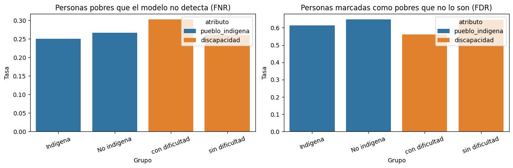
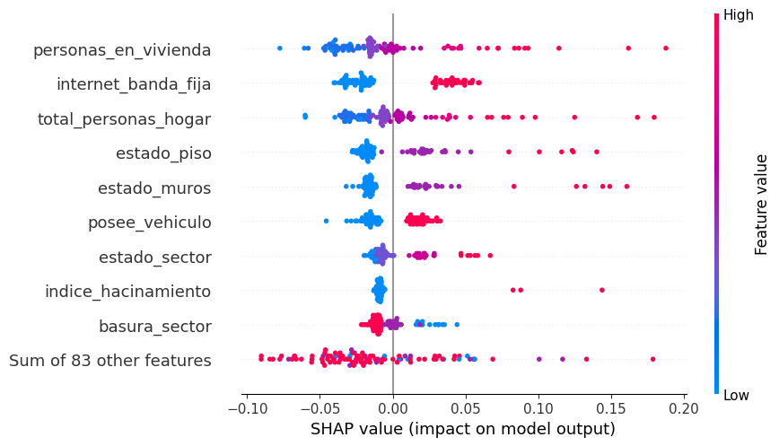
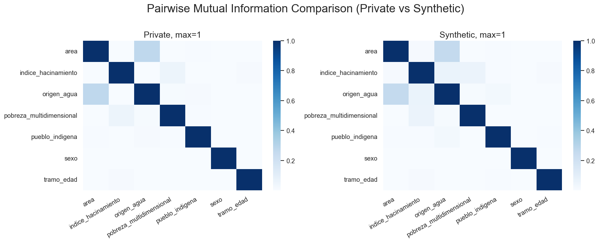

Análisis ético de la encuesta CASEN 2024
Proyecto de ETI195 Ética para Ciencia de Datos
Pontificia Universidad Católica de Chile
Octavio Holzapfel y Josías Albornoz
¿Por qué elegimos CASEN?
Elegimos la Encuesta CASEN porque nos identificábamos más con el área de las políticas públicas y con el tema de la pobreza y la desigualdad, y nos interesaba trabajar con algo que habla directamente de la realidad de Chile.
Además, CASEN es la encuesta con la que el Estado mide la pobreza y decide cómo focalizar el gasto social (Ministerio de Desarrollo Social y Familia [MDSF], 2026). Notamos que esto la hace especialmente delicada, porque detrás de cada fila hay una persona, y lo que se decide con estos datos puede definir quién recibe una ayuda y quién no.
Durante el semestre trabajamos con la pobreza multidimensional, que no mira solo los ingresos, sino también las carencias en educación, salud, trabajo, vivienda y entorno. Luego, nos preguntamos cómo se reparten esas carencias entre grupos que históricamente han sido marginados, como las personas indígenas y las personas con discapacidad, y qué les pasa cuando estos datos se usan para entrenar modelos. En consecuencia, la idea que nos acompañó todo el proyecto es que la pobreza no es algo propio de las personas, sino el resultado de barreras que el Estado no ha logrado garantizar.
Lo que hicimos en el semestre
Taller 1. Explorar los datos
Lo primero que notamos es que la base está muy desbalanceada. Las combinaciones de identidad más comunes concentran casi todos los datos, y grupos como las personas indígenas con una orientación no heterosexual casi no aparecen. También vimos que la pobreza es más alta en las personas indígenas (23,8 %) que en las no indígenas (16,6 %). En consecuencia, un modelo entrenado con estos datos podría fallar justo con quienes más necesitan ser vistos.
Taller 2. Sesgos y justicia en un modelo de pobreza
Entrenamos un árbol de decisión para predecir la pobreza multidimensional y revisamos si se equivocaba más con algunos grupos. Este es el gráfico que mejor resume lo que hicimos en ese taller.

Notamos que el modelo cumple los criterios de paridad de Aequitas, o sea, no hay diferencias grandes entre grupos. Sin embargo, las personas con dificultad de autocuidado tienen la barra de falsos negativos más alta, ya que el modelo deja sin detectar al 30,2 % de las personas pobres de este grupo, frente al 26,1 % de quienes no tienen esa dificultad. Si este modelo se usara para entregar beneficios, cada falso negativo sería una persona pobre que se queda sin la ayuda del Estado. Luego, probamos técnicas para mitigar el sesgo (EqOddsPostprocessing y Reweighing) y nos dimos cuenta de que acercar los errores entre grupos tiene un costo en el rendimiento, y que ninguna métrica resuelve por sí sola las causas de la pobreza (Arriagada Bruneau, 2024).
Taller 3. La caja negra
Con LIME revisamos un sistema que clasifica las opiniones de personas que reciben ayudas sociales. Notamos que el modelo se fija en palabras como "gracias", "aunque" o "pero" y no en el problema que cuenta la persona, por lo que reclamos sobre alimentos vencidos o deudas para pagar el arriendo terminaban clasificados como neutros o positivos. Luego, con SHAP explicamos un Random Forest que dejaba sin detectar a casi 2 de cada 3 personas pobres. En consecuencia, aprendimos que poder explicar un modelo ayuda a entenderlo, pero no basta para justificar que se entregue o se niegue un beneficio.

En este gráfico notamos que lo que más pesa en el modelo es la cantidad de personas en la vivienda, no tener internet fijo y el mal estado del piso y los muros. Tiene sentido, porque la vivienda es parte del propio indicador de pobreza. Sin embargo, que el modelo se apoye en estas variables no explica por qué esas familias viven así, solo describe cómo decide el modelo.
Taller 4 · ¿Cómo compartir datos sin exponer a las personas?
Revisamos CASEN desde un enfoque de derechos humanos y propusimos involucrar a las comunidades en la interpretación de las brechas y proteger los datos que podrían identificar a personas u hogares. Para explorar una forma de compartir información, generamos 20.000 registros sintéticos a partir de siete variables de CASEN y los comparamos con la base original usando ModelInspector.

Los datos sintéticos conservaron varias relaciones importantes, como la del área urbana o rural con el origen del agua y la de la pobreza multidimensional con el hacinamiento. Sin embargo, algunas categorías poco frecuentes, como el hacinamiento crítico, aparecieron con mayor frecuencia. También se observó una relación entre el origen del agua y el hacinamiento que era débil en los datos originales.
Para el activismo de datos, esto importa porque las categorías con pocos casos pueden corresponder a grupos o situaciones que queremos visibilizar. Los datos sintéticos pueden servir para enseñar y probar análisis. Antes de comunicar una brecha o usarla para pedir una respuesta pública, conviene comprobarla en los datos originales.
Conclusión
A lo largo del semestre notamos que el mismo problema se repetía en cada etapa. En la exploración, los grupos pequeños casi no se veían, en los modelos sus errores se escondían en el promedio y en las explicaciones el modelo se fijaba en otras cosas. Luego, nos dimos cuenta de que los datos nunca son neutrales, y que las decisiones técnicas que tomamos como científicos de datos también son decisiones sociales y políticas. Por ello, creemos que estas decisiones no deberían tomarse sin la participación de las propias comunidades afectadas, para que los datos sirvan para exigir derechos y no para dejar a más personas fuera.
Referencias
Arriagada Bruneau, G. (2024). Los sesgos del algoritmo: La importancia de diseñar una inteligencia artificial ética e inclusiva. La Pollera Ediciones.
Ministerio de Desarrollo Social y Familia. (2026). Metodología de diseño muestral Casen 2024. División Observatorio Social. Enlace